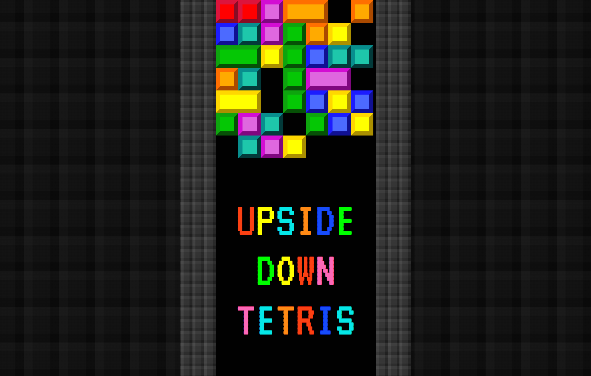
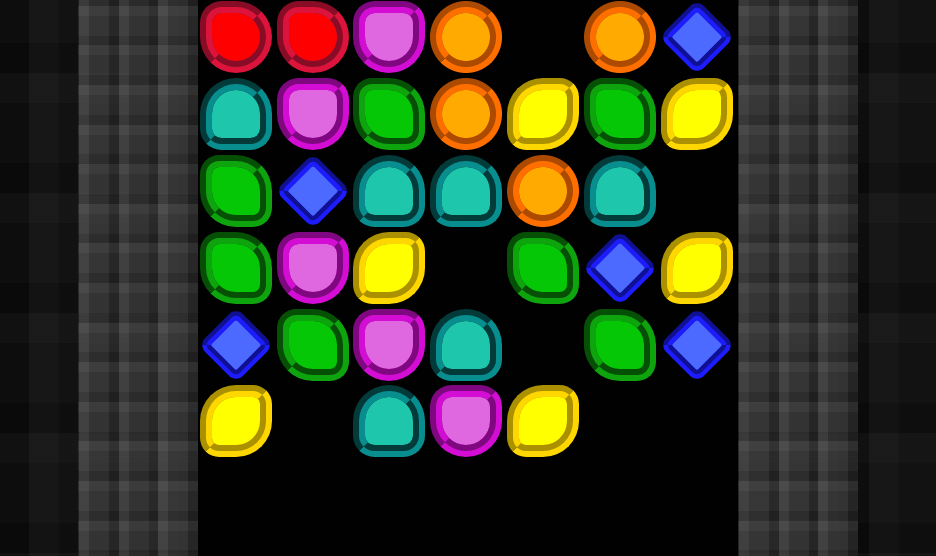

NOTE: To be clear, you will not be creating an actual game of Tetris in this exercise, you will just be using what you learned about the Box Model to create the blocks inside.
OBJECTIVES:
-
- Create at least THREE (3) rows of Tetris blocks (or other shapes)
- with at least FIVE (5) different color styles
- Practice using the CSS Properties you've learned today
NEW CONCEPTS WE'LL BE USING:
HOW TO COMPLETE:
Today we learned about the Box Model, and the three main components of it: border, padding, and margin. We're going to have you use what you learned in order to create a bunch of blocks in a template that resembles one of the oldest video games: Tetris!
Tetris is actually a pretty good analogy for Document Flow, just in reverse. In Tetris, block shapes fall down the screen and stack and form rows; in HTML, it's the opposite: HTML elements that you add flow "up" the screen, with inline elements flowing side to side, while block elements stack on separate lines.
Our goal for today is to utilize these new skills to create at least three rows of blocks in the Tetris, using CSS classes to color and style those blocks. We want you to include at least five different color styles (which could include different shapes as well).
If you're unsure about how to unzip the project template below, or how to get it into your repository, check out the following tutorial from the Coding Cookbook - Importing a Code Template.
-
- Download and unzip the upside-down tetris template; place the unzipped folder into your repository with the name "upside-down-tetris". It should contain:
- a css folder
- setup.css (don't modify this file)
- style.css (this is the file you'll be writing your CSS in)
- an empty images folder
- index.html
- Your objective is to create at least THREE (3) rows of Tetris blocks (or other shapes) inside the <div> element with the id of "block-area", and those rows should include at least FIVE (5) different colors/styles of blocks.
- To create a Tetris block
- add a <div> element with a "tetris-block" class inside the block-area element
- In the CSS, create a rule for your "tetris-block" class, and set the following recommended properties (you are free to deviate from these as long as you meet the requirements of the assignment)
- padding
- border-width
- border-style (use outset, if you want to match the image above)
- display
- This won't cause the block to display yet; you need to add another class to complete the styling of the block.
- To create a color style
- create a new CSS rule using a class selector (probably named after the color you want to set)
- set the following recommended properties in that CSS rule
- background-color
- border-color
- After creating a Tetris block and a color style, add the new class to the Tetris block
- e.g. <div class="tetris-block red"></div>
- remember that to add multiple classes to an HTML element, you just put both of them in the class attribute value (between the double quotes) with spaces between them
- Repeat Step 4 and create at least FOUR (4) other color styles
- Create a LOT more Tetris blocks in the block-area <div>, enough to fill THREE (3) rows
- You don't need to type out EVERY single <div> element; copy/pasting is fine, as long as you maintain good indentation and update the appropriate classes in each <div>
When completed, your preview window in Visual Studio Code should resemble something like the image at the top of the assignment, just with your own colors and styles of blocks. As long as you have those three rows of blocks, feel free to submit your code (make sure you test you code in the browser beforehand though!).
CHALLENGE
However, if you want to challenge yourself, you could make your blocks even more unique looking, as in the example below:

The blocks in the image above take advantage of two additional CSS properties, border-radius and transform, in addition to different border-styles:
-
- border-style
- There are MANY different types of border-styles; check out more of them in the Coding Cookbook's page for the border property!
- border-radius
- This CSS Property allows you to round the corners of a box
- transform
- This is a fun, albeit complex property that allows you to apply mathematical transformations to an element, such as rotate() and scale().
These extra properties are optional, but if you have the time, try and figure out how you can use them to modify your Tetris blocks! They're good properties to add to your CSS toolkit.
HOW TO SUBMIT:

-
- SAVE ALL OF YOUR WORK BEFORE PROCEEDING (inside Visual Studio Code)
- Open your Github Desktop app and commit and push any changes you made in the project folder
- Go to github.com in the Google Chrome browser and ensure the changes to your project folder were "pushed" up to your github.com repository
- Open the Github Pages site (Settings -> Pages -> Visit site)
- or alternatively, go to the Environments/Deployments section of your repository page, click "github-pages", and then click the most recent deployment
- Add your project folder name at the end of your URL
- Open the link to your new webpage for the project.
- Confirm it actually works before you submit it!!!
- Copy the URL in the address bar and submit it to receive credit for this assignment.
- Example URL: http://username.github.io/code-skeleton/
- This example assumes you followed the initial setup instructions correctly; if you deviated or made any mistakes, your URL may look a little different